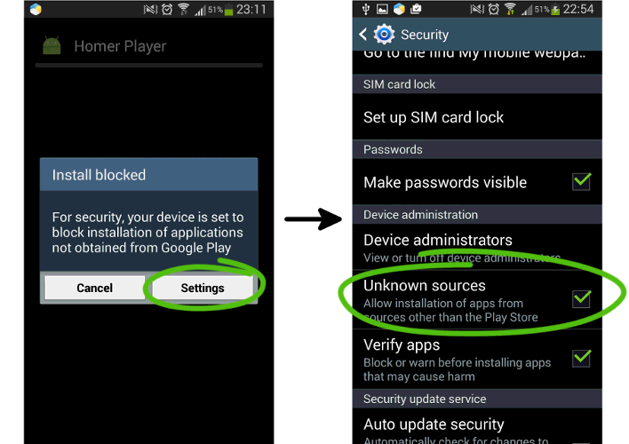

Tap on the downloaded file to install it.
You may be prompted to enable installation from unknown sources. In this case go to Settings → Security and enable Unknown sources.

Tap 5 times in the main screen to enter the application settings screen where you can configure the application.
You can find some free audi books on the Internet, e.g. on http://www.freeclassicaudiobooks.com
Homer Player is still pretty much an experiment and any feedback you may have is important.
Don't hesitate to e-mail me at: marcin@studio4plus.com